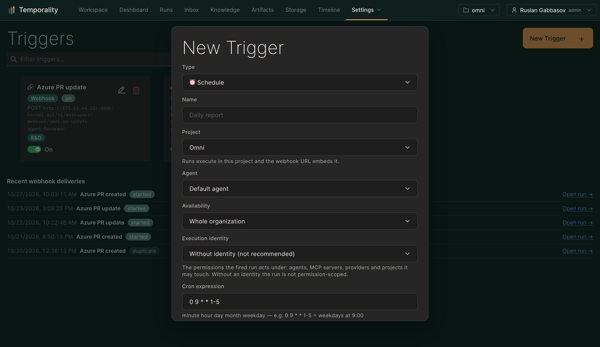

Триггеры
Запуск агентов по расписанию, вебхукам и событиям системы.
Триггеры запускают агентов без человека: по расписанию, входящему вебхуку
или событию системы. Страница Триггеры (/triggers), механика —
docs/triggers-and-escalations.md.
#Cron-триггер
Расписание в crontab-формате + проект, агент и промпт. Классика: «каждое утро в 09:00 — обход мониторинга и сводка инцидентов», «каждую пятницу — черновик отчёта по спринту». Каждый запуск — обычный ран: с трассой, бюджетом и подтверждениями.
#Вебхук-триггер
Внешняя система POST-ом заводит задачу: GitLab/GitHub CI упал, пришла заявка, обновился тикет. Каждому триггеру выдаётся персональный токен (кнопка генерации в форме) — не нужно раздавать общий ключ; вход только по HTTPS, подпись проверяется.
#Событийные триггеры
Слушатель событий Journal: «когда появилось знание со статусом оспорено», «когда ран завершился неудачей», «когда создан черновик артефакта» — запустить агента-разбирателя. Конструктор события: тип, источник, фильтры по данным.
#Execution identity
От чьего имени триггер заводит задачи: у триггера есть привязка к исполнительной идентичности — от неё считаются лимиты квот и видимость проектов. Канальные задачи продолжают считаться от отправителя.
#Наблюдение

Каждое срабатывание видно в «Запусках» как обычный ран (с меткой источника), а история срабатываний — в карточке триггера. Неудачный запуск триггера — тоже ран: его можно открыть, понять причину и перезапустить.